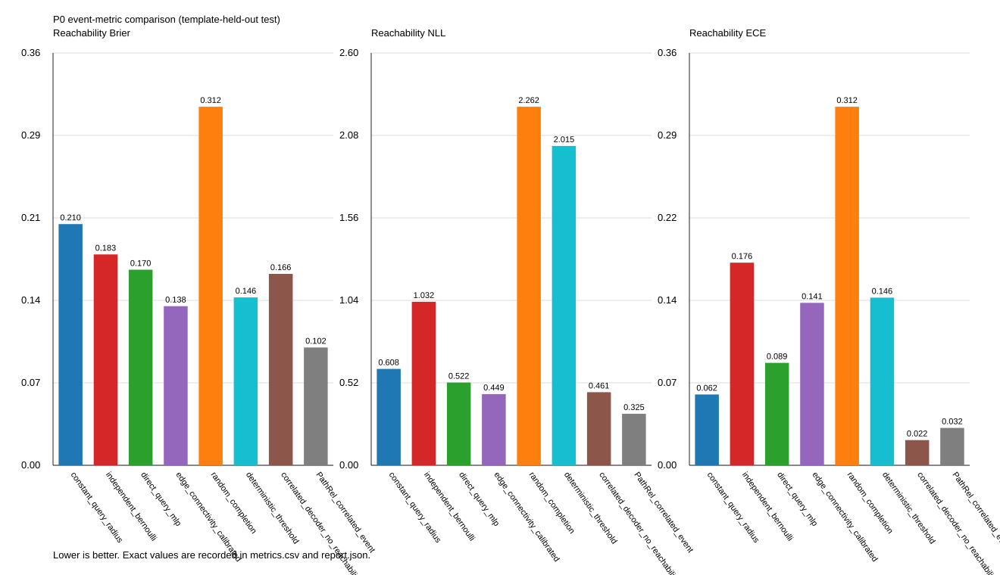
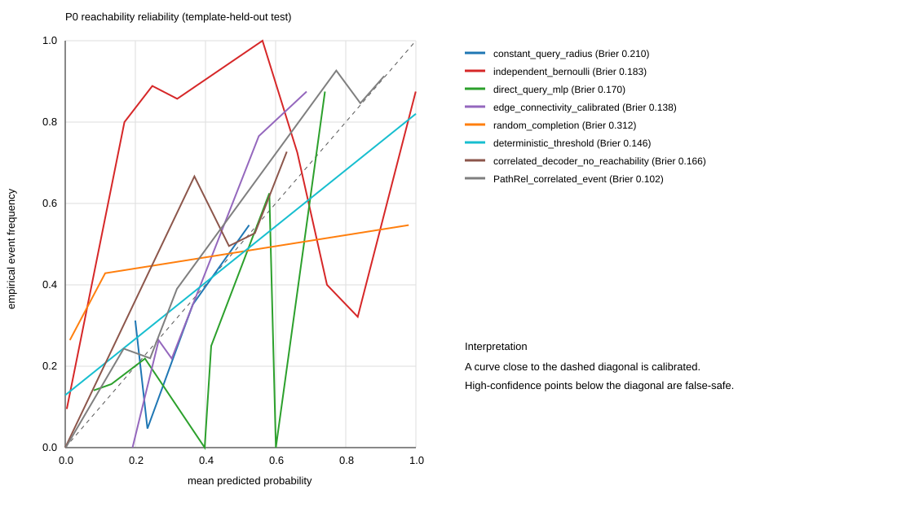

Partial observation
Known free/blocked cells are held exact; only the occluded doorway is sampled.
SYNTHETIC P0 · TEMPLATE HELD OUT
ConPath estimates the probability that a footprint-valid path exists through an uncertain world. The demo makes the hidden topology, correlated samples, and calibration trade-off visible in one place.
Connectivity-Calibrated Path Reliability · code and snapshots ship together.
01 · INTERACTIVE CONTRACT
Toggle the hidden doorway and footprint radius. The visible BEV stays fixed while the event probability changes for a reason a marginal occupancy map cannot express.
02 · REPRODUCIBLE WALKTHROUGH
Eight seconds of the same protocol, rendered from the tracked P0 snapshot.
SYNTHETIC P0 AUDIT
The video is deliberately labeled as an oracle proxy. It demonstrates the scientific contract and the failure mode; it does not turn the current neural checkpoint into a claimed benchmark result.
See the protocol →03 · P0 DEATH TEST
Held-out scene templates, identical visible observations, and exact NumPy reachability labels. Lower is better for all three headline metrics.
| Method | Brier ↓ | NLL ↓ | ECE ↓ | False-safe @ 0.8 |
|---|---|---|---|---|
| Loading tracked snapshot… | ||||
Loading latest snapshot…


04 · MAKE IT REPEATABLE
Snapshot metadata will appear here.
Known free/blocked cells are held exact; only the occluded doorway is sampled.
One shared latent doorway controls a whole wall column, preserving spatial correlation.
Reachability is evaluated after disk-footprint erosion at radii 0, 1, and 2 cells.
Run from the repository root after a new P0 evaluation.
PYTHONPATH=src .venv/bin/python scripts/evaluate_p0.py
PYTHONPATH=src .venv/bin/python scripts/build_demo_site.py
Claim boundary. The oracle proxy passes the synthetic gate. The latest neural P0 run remains an active diagnostic, and public-data readiness is explicitly NO-GO. This page will change when the tracked report changes.